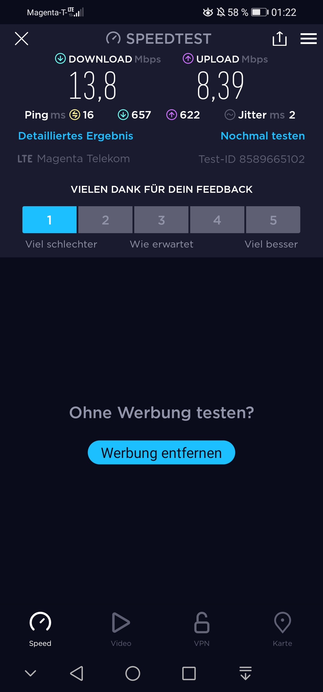

Hallo Leute!
Warum ist das mobile Internet in den Gebäuden so langsam in den letzten Tagen? Sogar bei mir daheim, Trockenbau, ist die Internetgeschwindigkeit weit unter der geworbenen Geschwindigkeit.
Kombiniert und kassiert bedeutet langsamer oder wie?
Geworben 100/50 und es kommt in der Nacht auf gerade mal 40/10.
Was soll das?
Und dann soll man das Angebot des unlimitierten mobilen Internets bis Ende Oktober nutzen? Wozu? Herr Bierwirth geht eh zu Erste Group. Schaut lieber, dass die vertraglichen Geschwindigkeiten halten. 
Bearbeitet von mahler77
Hast du das auch an anderen Standorten getestet?
Damit man mal eingrenzen kann...
Hallo @mahler77 ,
du weißt schon auch, dass die erreichbare Geschwindigkeit von den Gegebenheiten vor Ort abhängig ist? Wenn der Empfang geringer ist (Sendestation ist weiter entfernt, andere Signale stören etc), dann wird auch der Speed weniger. LG, JD.
vor 10 Stunden schrieb Christian_E:Hast du das auch an anderen Standorten getestet?
Damit man mal eingrenzen kann...
Ja, habe ich, draußen an vielen Orten, geändert hat sich aber nicht viel.
vor 7 Stunden schrieb Jonathan Dorian:Hallo @mahler77 ,
du weißt schon auch, dass die erreichbare Geschwindigkeit von den Gegebenheiten vor Ort abhängig ist? Wenn der Empfang geringer ist (Sendestation ist weiter entfernt, andere Signale stören etc), dann wird auch der Speed weniger. LG, JD.
Das ist mir klar.
Nur wenn man im Wien auf der Straße unter der Hälfte der geworbenen Geschwindigkeit bleibt, ist das schon auffällig.
@mahler77 , melde dich mal bei unserem Technikteam unter 0676 200 7777. Unsere Kolleg*innen können prüfen, ob vor Ort vielleicht eine erhöhte Netzauslastung oder eine allgemeine Störung vorliegt. LG, JD.
Das werde ich machen.
Dieser Zustand ist echt inakzeptabel. Sonntag, 10 Uhr, 10/7 bei geworbenen 100/50?
Das Handy meiner Frau hat ähnliche Geschwindigkeiten.
Bitte halte uns hier am Laufenden. Wäre interessant, wie du dein Problem lösen konntest.
{kind=link}
{kind=link}
{kind=link}